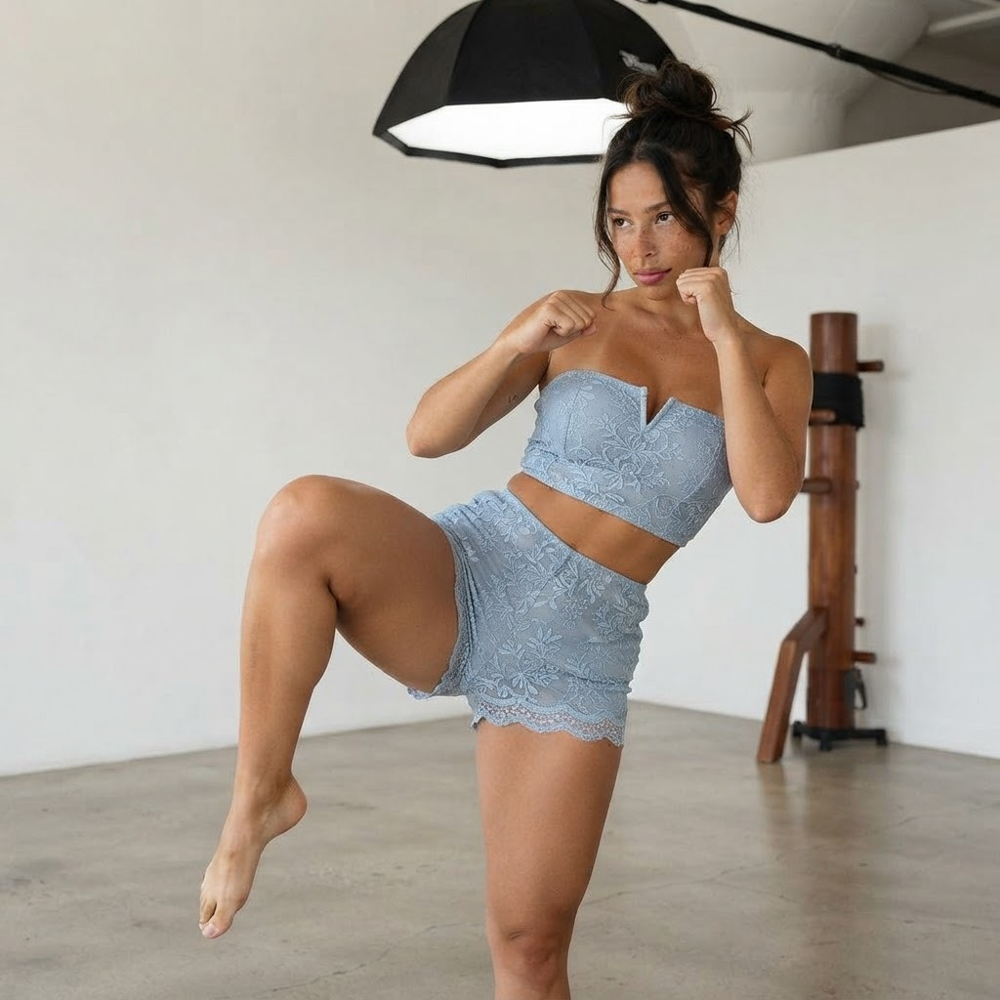
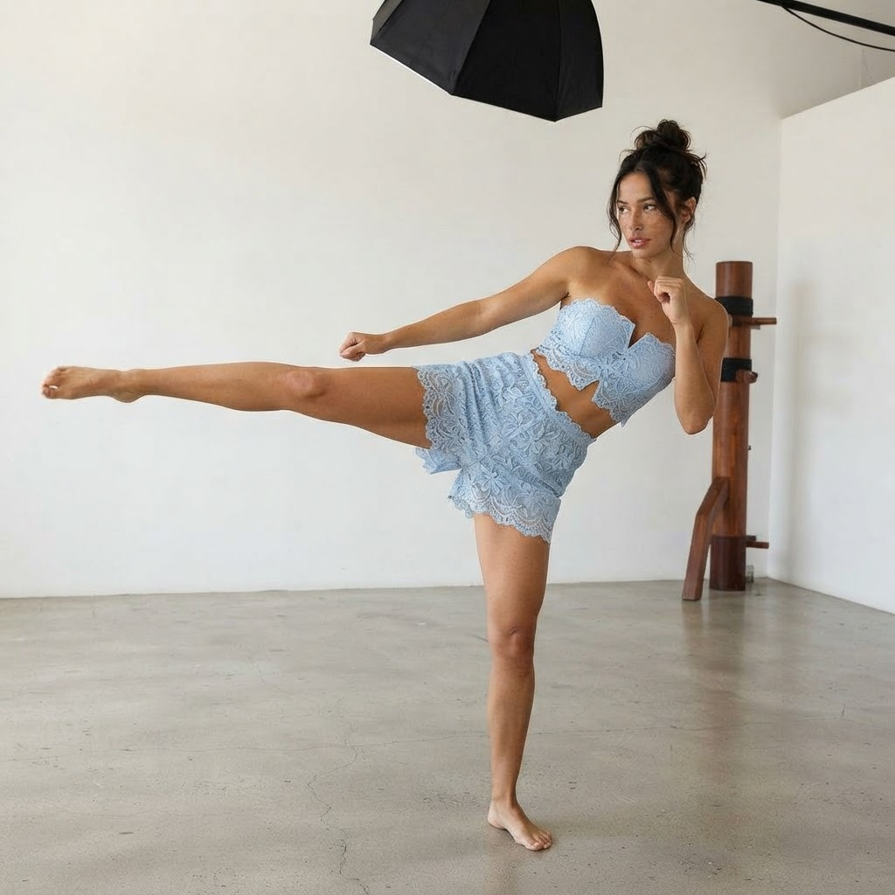
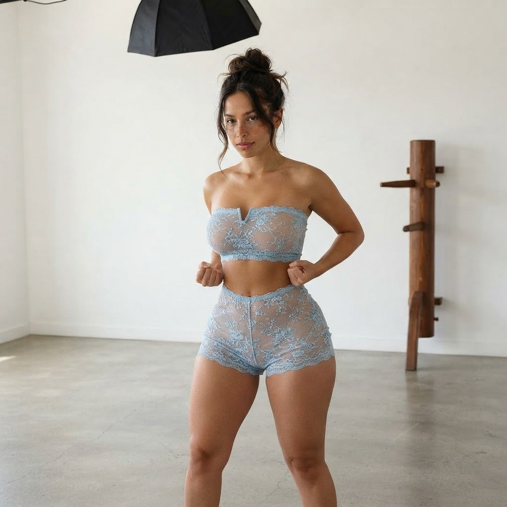

תרגיל 1: בעיטה צדדית (סייד קיק)
הבעיטה הצדדית נעה בקו ישר — לא בקשת. הכוח נולד מהידוך הברך ומהדחיפה של רגל התמיכה מהרצפה, והגוף נוטה הצידה כנגד משקל הרגל כדי לשמור על שיווי משקל מלא.

שלב 1: עמידת מוצא — רגליים ברוחב הכתפיים, אגרופים במותניים

שלב 2: הידוך — עמידה על רגל שמאל, ברך ימין עולה לגובה המותן, עקב מכוון למטרה

שלב 3: הארכה — הרגל נורית ישר הצידה בגובה החזה, להב כף הרגל מוביל

שלב 4: חזרה — הרגל חוזרת בשליטה לקרקע, אגרופים חוזרים לשמירה